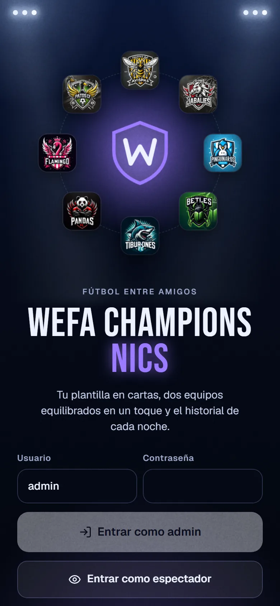
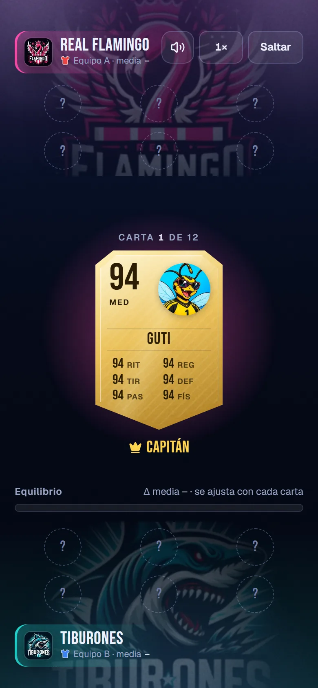
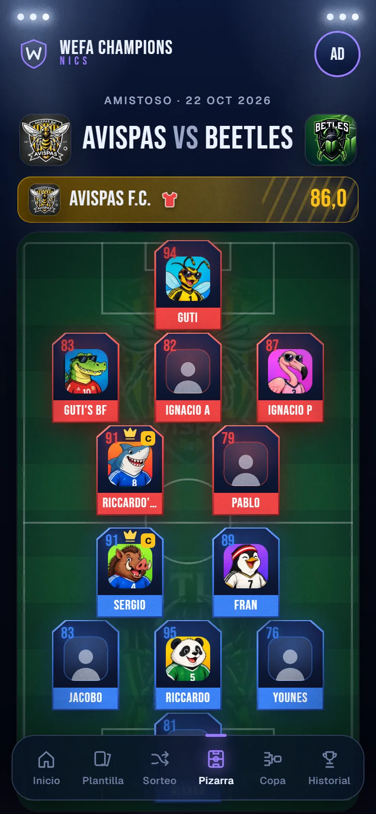
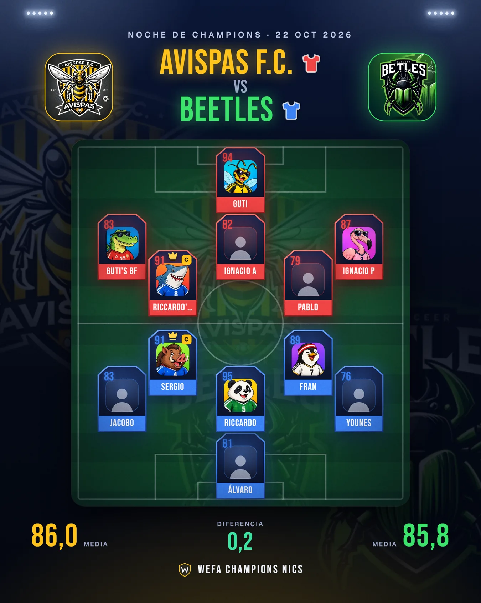
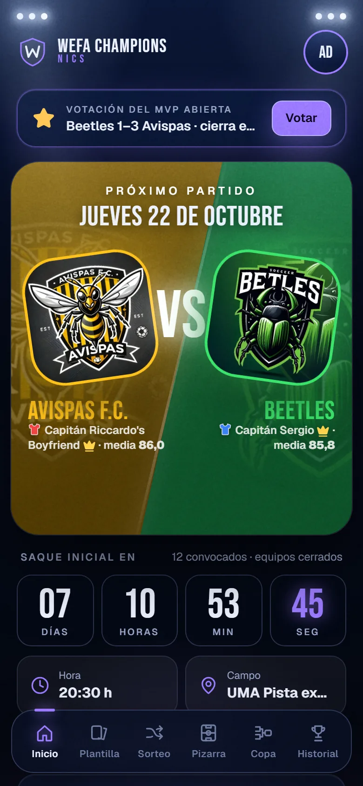
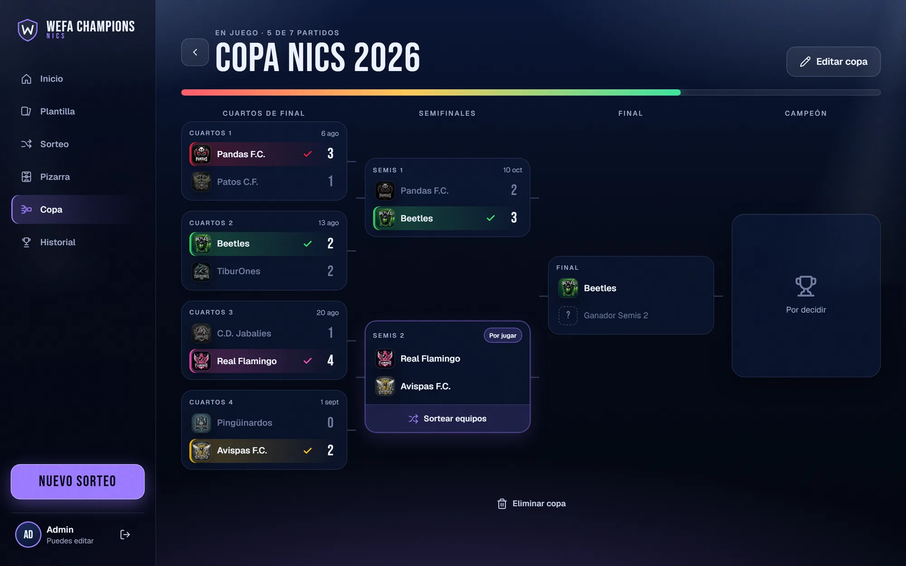
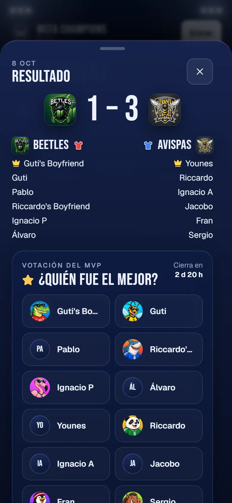
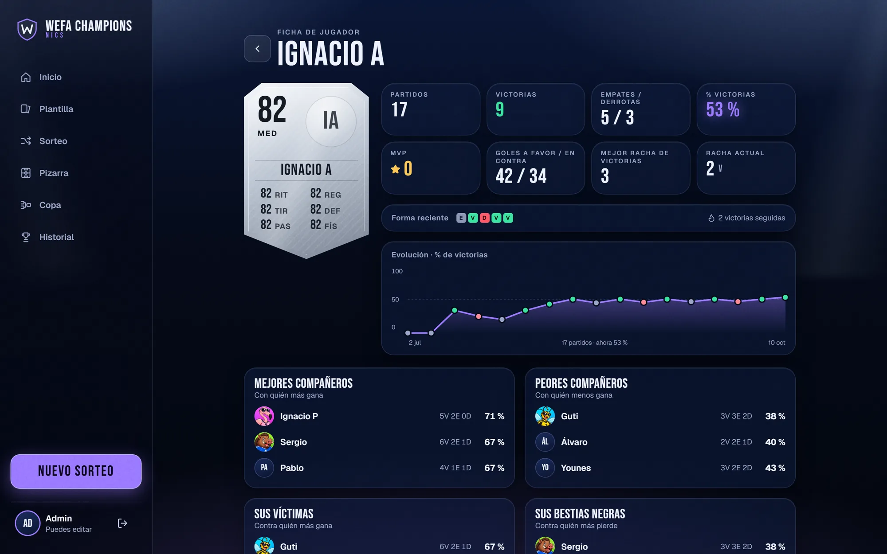
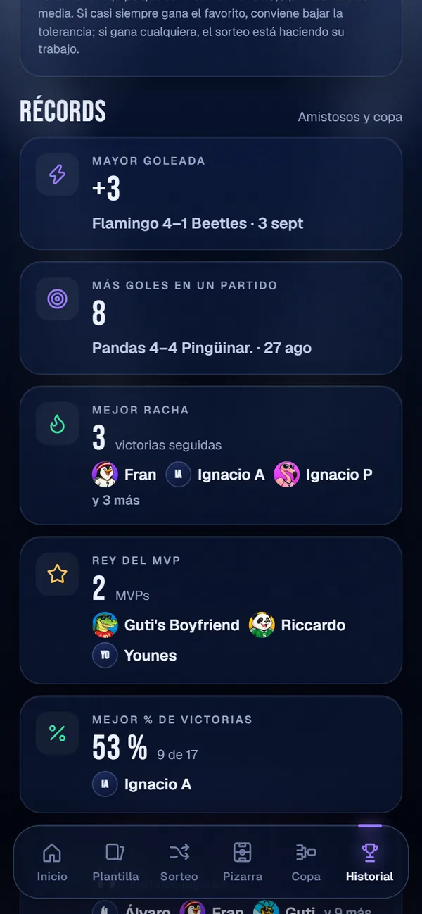

Fútbol entre amigos
Sorteos igualados, copas y estadísticas de nuestros partidos, en una sola app.
francisco-zafra.github.io/WEFA-CHAMPIONS-NICS

La idea
01
Equipos igualados según la media de cada uno.
02
Cuenta atrás, alineación y camisetas claras.
03
Resultados, MVP, copas y estadísticas.
01 · Sorteo
Reparte a los convocados según su media para que los dos equipos queden lo más parejos posible.
Capitanes y reglas: «juntos» o «separados»
Busca variedad: no repite siempre las mismas parejas
Se revela carta a carta, con suspense

02 · Alineación
Rojo arriba, azul abajo. Se retoca a mano y se comparte como imagen.


03 · Próximo partido
Al abrir la app ves el próximo partido con su cuenta atrás, la hora y el campo.
Los dos equipos y quién es capitán
Quién juega de rojo y quién de azul

04 · Copa
Cuartos, semis y final. Cada cruce tiene su sorteo de equipos y su resultado.
Se puede jugar a la vez que los amistosos.

05 · MVP
Después del partido, cualquiera vota al mejor desde su móvil.
Un voto por persona, sin crear cuenta
Se cierra a las 72 horas o cuando diga el admin

06 · Estadísticas
Amistosos y copa cuentan en todo.
Clasificación
Ranking
Duelos
Récords
Ficha de cada jugador


Y además
Rojo arriba, azul abajo, en toda la app.
Avisa si alguien rinde por encima o por debajo de su media.
Cambiar clubes y cruces sin perder resultados.
El admin sortea y edita; el resto mira y vota.
Cada jugador con su carta, su media y su avatar.
Se instala en el móvil desde el navegador.
WEFA Champions NICS
francisco-zafra.github.io/WEFA-CHAMPIONS-NICS
Pulsa «Entrar como espectador» y lo ves todo, sin cuenta.